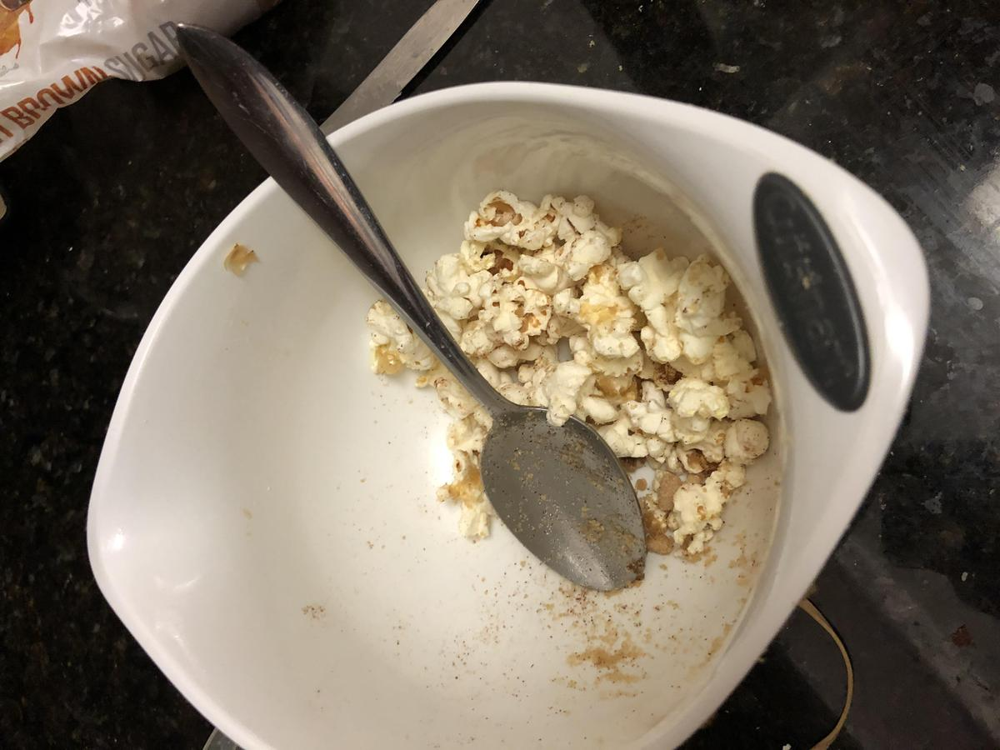

Personal rating: 2 / 5

1/4 cup kernels
~1 Tbsp butter
~1 tsp cinnamon
~2 tsp sugar
Place in popper and cook for 2:20 in our 900 watt microwave
Microwave the butter until softened then mix with the popcorn. Coat with the cinnamon and sugar